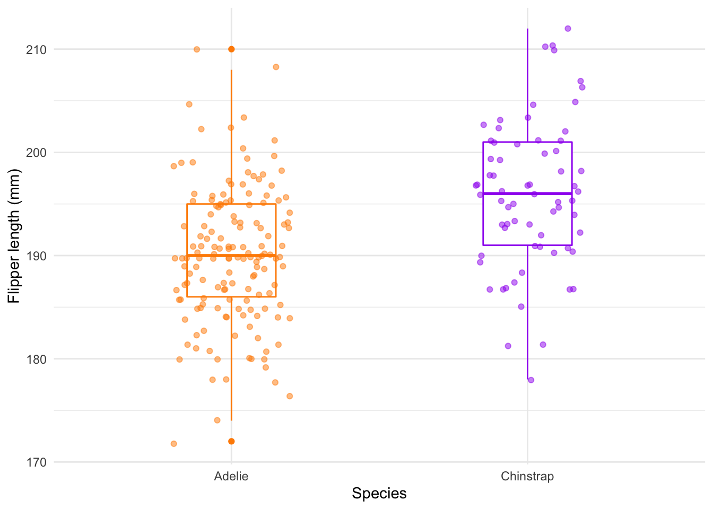
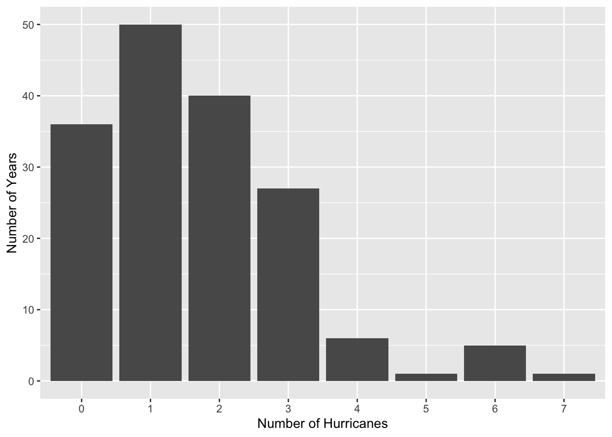
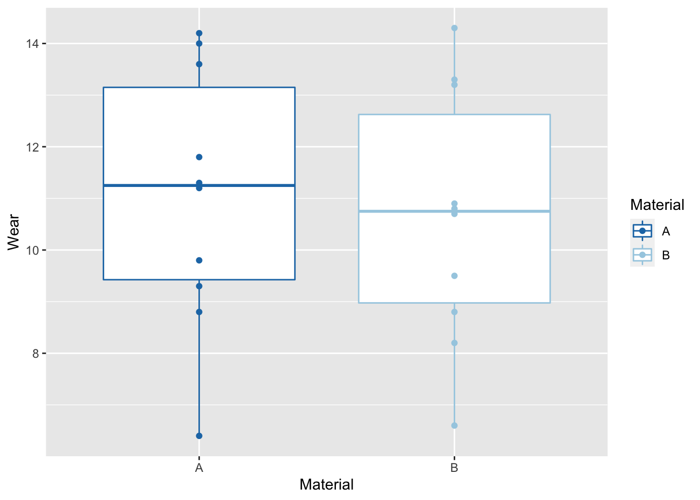
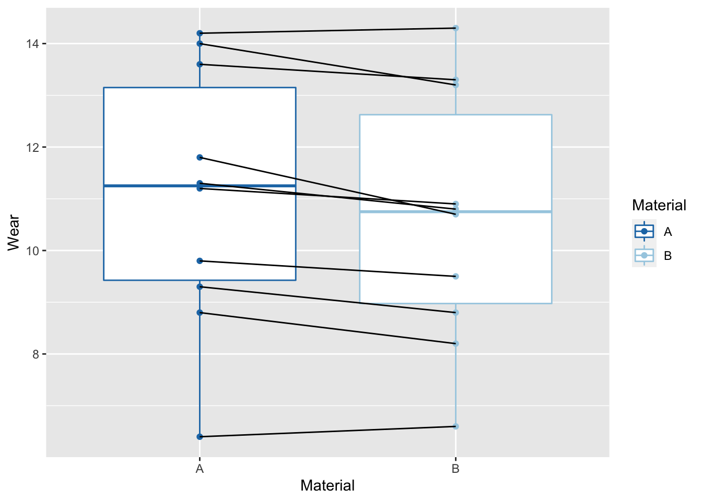
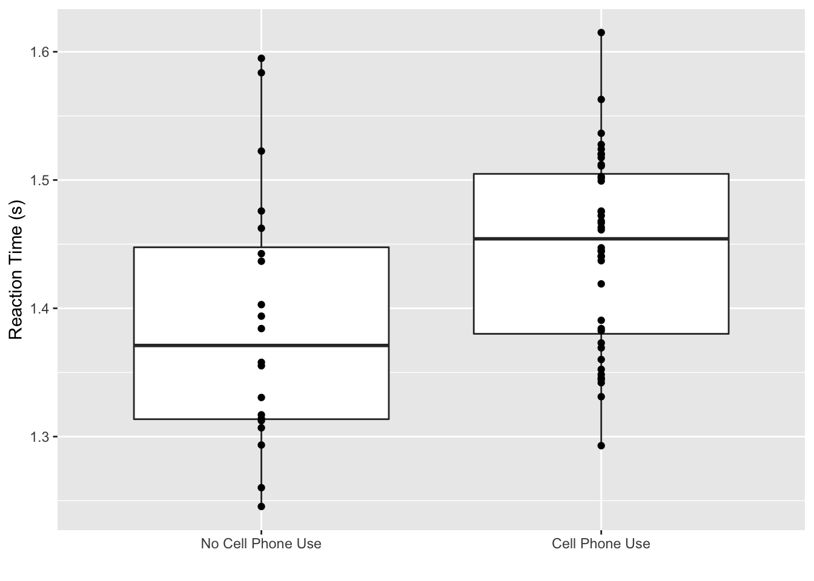

Thursday, September 28, 2022
Today
Last time you saw how to perform a \(t\) test in R and how the correspondence between the test’s \(p\)-value and the ease it was to find a plot of the actual data against the plots created from data under a null hypothesis (fake data).
If you find it easy to pick out the plot of the actual data in line up of plots generated from fake data, then the \(p\)-value from a formal statistical test will be small providing you with evidence to reject the null hypothesis.
Example: Palmer penguins
On average do Adelie penguins have shorter flippers than Chinstrap penguins?
Let \(A\) be the length of Adelie penguin flippers and \(C\) be the length of Chinstrap penguin flippers. Then you formally write the statistical test as \[ \hbox{H}_0: \mu_{A} = \mu_{C} \\ \hbox{H}_A: \mu_{A} \lt \mu_{C} \]
The data set to test this one-sided hypothesis is available as part of the {palmerpenguins} package.
library(palmerpenguins)
head(penguins)## # A tibble: 6 × 8
## species island bill_length_mm bill_depth_mm flipper_length_… body_mass_g sex
## <chr> <chr> <dbl> <dbl> <dbl> <dbl> <chr>
## 1 Adelie Torge… 39.1 18.7 181 3750 male
## 2 Adelie Torge… 39.5 17.4 186 3800 fema…
## 3 Adelie Torge… 40.3 18 195 3250 fema…
## 4 Adelie Torge… NA NA NA NA <NA>
## 5 Adelie Torge… 36.7 19.3 193 3450 fema…
## 6 Adelie Torge… 39.3 20.6 190 3650 male
## # … with 1 more variable: year <dbl>Remove the rows corresponding to the larger Gentoo penguins.
library(dplyr)
penguins <- penguins |>
dplyr::filter(species != "Gentoo") |>
dplyr::filter(!is.na(flipper_length_mm))library(ggplot2)
ggplot(data = penguins, aes(x = species, y = flipper_length_mm)) +
geom_boxplot(aes(color = species), width = .3, show.legend = FALSE) +
geom_jitter(aes(color = species), alpha = .5, show.legend = FALSE,
position = position_jitter(width = 0.2, seed = 0)) +
scale_color_manual(values = c("darkorange","purple")) +
theme_minimal() +
labs(x = "Species",
y = "Flipper length (mm)")You see that, on average, Adelie penguins have shorter flippers than the Chinstrap penguins. But there is substantial individual variability.
Let’s start with a lineup of plots where you permute flipper length between the species.
fun <- nullabor::null_permute("species")
inf <- nullabor::lineup(fun, penguins, n = 15)## decrypt("h8RX 5IvI ne TAynvnAe kL")ggplot(inf, aes(x = species, color = species, y = flipper_length_mm)) +
geom_boxplot() +
scale_color_manual(values = c("darkorange","purple")) +
facet_wrap(~ .sample, ncol = 15) +
theme(axis.text.x = element_text(angle = 90, hjust = 1)) +
xlab("")
Based on the line up of plots and the ease at which you can pick out the plot made with the actual data, is this convincing, moderate, or suggestive evidence to reject the null hypothesis?
t.test(flipper_length_mm ~ species,
data = penguins,
var.equal = TRUE,
alternative = "less")##
## Two Sample t-test
##
## data: flipper_length_mm by species
## t = -5.974, df = 217, p-value = 4.689e-09
## alternative hypothesis: true difference in means between group Adelie and group Chinstrap is less than 0
## 95 percent confidence interval:
## -Inf -4.246781
## sample estimates:
## mean in group Adelie mean in group Chinstrap
## 189.9536 195.8235Q: How do you write your conclusions? A: Adelie penguins in the sample have a mean flipper length of 190 mm, which is shorter than the mean flipper length of the Chinstrap penguins by about 6 mm. Given a sample size of 219 penguins this difference provides convincing evidence against the null hypothesis that population mean flipper length is the same (or longer) for the Chinstrap penguins.
Your turn
Test the hypothesis that on average female penguins have shorter bill lengths than male penguins.
t.test(bill_length_mm ~ sex,
data = penguins,
var.equal = TRUE,
alternative = "less")Test of equal variance
In the test of mean flipper length by species above you assumed that the within-species variability among penguins is the same for both species (var.equal = TRUE).
You can check this assumption by computing the variance by species.
penguins |>
dplyr::group_by(species) |>
dplyr::summarize(varFL = var(flipper_length_mm))## # A tibble: 2 × 2
## species varFL
## <chr> <dbl>
## 1 Adelie 42.8
## 2 Chinstrap 50.9There is less variance in flipper length for the sample of Adelie penguins compared with the variance in flipper length for the sample of Chinstrap penguins. But is this difference significant?
The ratio of the two variances is about .84.
You formally test with the var.test() function under the null hypothesis that the ratio of the two variances is equal to 1 (a ratio of one is equivalent to equal variances).
var.test(flipper_length_mm ~ species,
data = penguins)##
## F test to compare two variances
##
## data: flipper_length_mm by species
## F = 0.84076, num df = 150, denom df = 67, p-value = 0.3854
## alternative hypothesis: true ratio of variances is not equal to 1
## 95 percent confidence interval:
## 0.5489336 1.2465576
## sample estimates:
## ratio of variances
## 0.8407631The output shows that the ratio of the variances is .84.
Under the null hypothesis that the true ratio is 1 the \(F\) statistic (F =) follows an F distribution with 150 and 67 degrees of freedom which gives a two-sided \(p\)-value of .3854 (Note: This is why the test is sometimes called the ‘F-test’).
Thus you conclude there is no statistical evidence of a difference in the variability in flipper length between the two species.
Note: the uncertainty interval includes the value of 1 and is quite wide.
The test of equal variance is sensitive to small departures from a normal distribution and it is based on the assumption that the groups are independent. It should not be applied in the setting where the data values are paired.
The t.test() and var.test() functions are in the {stats} package as part of the base install of R.
The {ctest} package contains all the “classical tests,” and has several alternative tests for variance homogeneity, each with its own assumptions, benefits, and drawbacks.
Wilcoxon (Mann-Whitney U) non-parameteric test of difference in means
You can avoid the distributional assumption by using a non-parametric test. The non-parametric alternative is the Wilcoxon test (also known as the Mann-Whitney U test).
The test statistic ‘W’ is the sum of the ranks in the first group minus the sum of the ranks in the second. It is obtained with the wilcox.test() function.
For example, is there evidence of more or fewer U.S. hurricanes recently? One way to examine this question is to divide the time period into two samples and compare the means from both samples.
loc <- "http://myweb.fsu.edu/jelsner/temp/data/US.txt"
LH.df <- readr::read_table(loc)##
## ── Column specification ────────────────────────────────────────────────────────
## cols(
## Year = col_double(),
## All = col_double(),
## MUS = col_double(),
## G = col_double(),
## FL = col_double(),
## E = col_double()
## )You consider the first half of the record as separate from the second half and ask is there a difference in hurricane counts between the two halves. The null hypothesis is that the sample means are the same.
First create a vector that divides the record length in two equal parts.
early <- LH.df$Year <= median(LH.df$Year)
head(early); tail(early)## [1] TRUE TRUE TRUE TRUE TRUE TRUE## [1] FALSE FALSE FALSE FALSE FALSE FALSEThen run a test on the U.S. hurricane counts where the explanatory variable is the vector early.
t.test(LH.df$All ~ early,
alternative = "two.sided")##
## Welch Two Sample t-test
##
## data: LH.df$All by early
## t = -0.59291, df = 162.53, p-value = 0.5541
## alternative hypothesis: true difference in means between group FALSE and group TRUE is not equal to 0
## 95 percent confidence interval:
## -0.5739157 0.3088554
## sample estimates:
## mean in group FALSE mean in group TRUE
## 1.60241 1.73494The \(p\)-value is large (> .15) so you fail to reject the null hypothesis of no difference in mean number of hurricanes between the earlier and the later periods.
The 95% uncertainty interval is centered on the difference in means. Since the interval contains zero, there is no evidence to reject the null hypothesis.
Since there are 166 years in the record (length(LH.df$All)) you take the first 83 years for the first sample (s1) and the next 83 years for the second sample (s2) and then test.
s1 <- LH.df$All[early]
s2 <- LH.df$All[!early]
t.test(s1, s2,
alternative = "two.sided")##
## Welch Two Sample t-test
##
## data: s1 and s2
## t = 0.59291, df = 162.53, p-value = 0.5541
## alternative hypothesis: true difference in means is not equal to 0
## 95 percent confidence interval:
## -0.3088554 0.5739157
## sample estimates:
## mean of x mean of y
## 1.73494 1.60241Small counts are not well described by a normal distribution.
ggplot(data = LH.df,
mapping = aes(factor(All))) +
geom_bar() +
ylab("Number of Years") +
xlab("Number of Hurricanes")
Their are many more years with counts below the mean (1.7 hur/year) than counts above the mean.
So you use the non-parametric Wilcoxon test instead.
wilcox.test(s1, s2)##
## Wilcoxon rank sum test with continuity correction
##
## data: s1 and s2
## W = 3592.5, p-value = 0.6239
## alternative hypothesis: true location shift is not equal to 0The \(p\) value again exceeds .15 so the conclusion is the same. The second half of the record is statistically indistinguishable from the first half.
Paired observations
In cases where the observations come in pairs you can ‘control’ for individual variation by doing a paired \(t\) test.
Example: A shoe manufacturer makes two different materials (A and B). A sample of 10 kids try both materials. Wear times (in months) are recorded for each material. You want to know if one material is more resistant to wear.
So you test if there is a difference in shoe material wear times. You start by creating a long data frame from the recorded wear times.
matA <- c(14, 8.8, 11.2, 14.2, 11.8, 6.4, 9.8, 11.3, 9.3, 13.6)
matB <- c(13.2, 8.2, 10.9, 14.3, 10.7, 6.6, 9.5, 10.8, 8.8, 13.3)
df <- data.frame(Kid = rep(1:10, 2),
Material = c(rep("A", 10), rep("B", 10)),
Wear = c(matA, matB))You then plot the wear times.
( p <- ggplot(df, aes(x = Material, y = Wear, color = Material)) +
geom_boxplot() +
geom_point() +
scale_color_manual(values = c("#1F78B4", "#A6CEE3")) )
Wear times range from less than 7 months to more than 14 months. But there does not appear to be a significant difference in wear times between material A and B.
On average, material A wears longer than material B (11 months versus 10.6 months) but the difference is small relative to the individual wear times. Thus, as expected when you run a \(t\) test on these two samples you find a large \(p\)-value.
t.test(matA, matB,
alternative = "two.sided")##
## Welch Two Sample t-test
##
## data: matA and matB
## t = 0.36891, df = 17.987, p-value = 0.7165
## alternative hypothesis: true difference in means is not equal to 0
## 95 percent confidence interval:
## -1.925046 2.745046
## sample estimates:
## mean of x mean of y
## 11.04 10.63Let’s add a line layer to the plot where you group the points on the graph by Kid.
p + geom_line(mapping = aes(group = Kid), color = "black")
This shows material A wears longer in 8 of the 10 kids (most of the connecting lines slope downward toward material B).
In this case since there is a grouping variable you use the paired = TRUE argument in the \(t\) test.
t.test(matA, matB,
paired = TRUE,
alternative = "two.sided")##
## Paired t-test
##
## data: matA and matB
## t = 3.3489, df = 9, p-value = 0.008539
## alternative hypothesis: true difference in means is not equal to 0
## 95 percent confidence interval:
## 0.1330461 0.6869539
## sample estimates:
## mean of the differences
## 0.41Now you find a \(p\)-value less than .01 so you conclude there is a significant difference in wear times between the two materials.
The paired test is a one-sample test where the hypothesized mean difference is zero. To see this create a new vector as the difference in wear times.
( df <- data.frame(matA, matB) |>
mutate(Diff = matA - matB,
Kid = 1:10) )## matA matB Diff Kid
## 1 14.0 13.2 0.8 1
## 2 8.8 8.2 0.6 2
## 3 11.2 10.9 0.3 3
## 4 14.2 14.3 -0.1 4
## 5 11.8 10.7 1.1 5
## 6 6.4 6.6 -0.2 6
## 7 9.8 9.5 0.3 7
## 8 11.3 10.8 0.5 8
## 9 9.3 8.8 0.5 9
## 10 13.6 13.3 0.3 10Then use the one-sample version of the \(t\) test with mu = 0.
t.test(df$Diff,
mu = 0,
alternative = "two.sided")##
## One Sample t-test
##
## data: df$Diff
## t = 3.3489, df = 9, p-value = 0.008539
## alternative hypothesis: true mean is not equal to 0
## 95 percent confidence interval:
## 0.1330461 0.6869539
## sample estimates:
## mean of x
## 0.41Example: Reaction time while driving
Cell phone use while driving is believed to increase the chance of an accident due to slowed reaction time. The data set reaction.time in the package {UsingR} gives the time it takes to react to an external event while driving by various groups.
df <- UsingR::reaction.time
str(df)## 'data.frame': 60 obs. of 4 variables:
## $ age : Factor w/ 2 levels "16-24","25+": 1 1 1 1 1 1 1 1 1 1 ...
## $ gender : Factor w/ 2 levels "F","M": 1 2 2 1 2 2 2 1 1 2 ...
## $ control: Factor w/ 2 levels "C","T": 2 2 2 2 2 1 2 2 2 1 ...
## $ time : num 1.36 1.47 1.51 1.39 1.38 ...The variable time is the reaction time in seconds. This is the response variable (the variable you are interested in). The factor variable control has two groups ‘C’ control (not using cell phone) and ‘T’ (using cell). The observations are not paired. The data set is in the long format.
Suppose I was asked to test the hypothesis that, on average, reaction time is shorter for those not using a cell phone.
Here is my thought process:
I would start by computing the mean for each group (C: control and T: phone user) from the sample of data I have.
df |>
dplyr::group_by(control) |>
dplyr::summarize(mean(time),
sd(time))## # A tibble: 2 × 3
## control `mean(time)` `sd(time)`
## <fct> <dbl> <dbl>
## 1 C 1.39 0.100
## 2 T 1.45 0.0747First I note that the control group has a shorter reaction time than the phone-user group, on average. If this was not the case I would be finished concluding that the sample of data provides no evidence in support of the hypothesis.
Second I note that the difference in means is 6 hundredths of a second. And the standard deviations are of nearly the same magnitude as the difference in means.
Third I plot the response variable (time) conditional on the control variable.
ggplot(df, aes(x = control, y = time)) +
geom_boxplot() +
geom_point() +
scale_x_discrete(labels = c("No Cell Phone Use", "Cell Phone Use")) +
xlab("") + ylab("Reaction Time (s)")
Fourth I note the median reaction time for the control group (no cell phone use) is shorter and the interquartile ranges overlap. This tells me a statistical test is needed.
Fifth I note both distributions are approximately symmetric about the median so I am safe to use a \(t\) test.
Sixth I note the variability in reaction times for the two groups is about the same.
The null hypothesis is that there is no difference in reaction times. Here the alternative is that the reaction time is shorter for those not using a phone.
I use the model syntax: response ~ explanatory as the first argument in the t.test() function. I include an argument that names the data frame where the columns time and control are located. Here the argument alternative = 'less' is used.
t.test(time ~ control,
data = df,
var.equal = TRUE,
alternative = 'less')##
## Two Sample t-test
##
## data: time by control
## t = -2.4329, df = 58, p-value = 0.009041
## alternative hypothesis: true difference in means between group C and group T is less than 0
## 95 percent confidence interval:
## -Inf -0.01751153
## sample estimates:
## mean in group C mean in group T
## 1.389613 1.445571The evidence in support of the null hypothesis that the reaction times are the same in the population is summarized by the \(p\)-value. The \(p\)-value is .009, so I conclude there is convincing evidence indicating cell phone use slows reaction times.
The adjective ‘convincing’ comes from the following table: \(p\)-value as evidence against the null hypothesis.
less than 0.01: convincing
0.01-0.05: moderate
0.05-0.15: suggestive, but inconclusive
greater than 0.15: noChi-squared test for independence
This test is used when you have two categorical variables from a single population. It determines whether there is a significant association between the two variables.
For example, in an election survey, voters might be classified by male or female and voting preference (Democrat, Republican, or Independent). You use a chi-squared test for independence to determine whether sex is related to voting preference.
The test is appropriate when the sampling method is random, the variables under study are each categorical, and the expected frequency count for each cell of the table is at least five.
The hypothesis is: \[ \hbox{H}_0: \hbox{Variable A and Variable B are independent}\\ \hbox{H}_A: \hbox{Variable A and Variable B are not independent} \]
The alternative hypothesis is that knowing the level of A can help us predict the level of B. Support for the alternative hypothesis does not imply causality.
The test statistic is a chi-squared random variable defined by \[ \chi^2 = \sum_{r = 1}^{n_r} \sum_{c = 1}^{n_c} \frac{(O_{r,c} - E_{r,c})^2}{E_{r,c}} \] where \(O_{r,c}\) is the observed frequency count at level \(r\) of variable A and level \(c\) of variable B, and \(E_{r,c}\) is the corresponding expected frequency count, where \[ E_{r,c} = \frac{n_r \times n_c}{n} \] where \(n_r\) is the total number of sample observations of variable A and \(n_c\) is the total number of sample observations of variable B, and \(n\) is the total sample size.
Example: Smoking habits and exercise
In the data set survey ({MASS} package), the Smoke column records the students smoking habit, while the Exer column records their exercise level. The allowed values in Smoke are “Heavy,” “Regul” (regularly), “Occas” (occasionally) and “Never.” As for Exer, they are “Freq” (frequently), “Some” and “None.”
You tally the students smoking habits against their exercise levels with the table() function.
library(MASS)
( SH.tbl <- table(survey$Smoke, survey$Exer) )##
## Freq None Some
## Heavy 7 1 3
## Never 87 18 84
## Occas 12 3 4
## Regul 9 1 7The result is called a contingency table of the two variables. Values for the level of exercise are in the columns and values for the level of smoking are in the rows.
You test the hypothesis of whether student smoking levels are independent of their exercise level using
chisq.test(SH.tbl)## Warning in chisq.test(SH.tbl): Chi-squared approximation may be incorrect##
## Pearson's Chi-squared test
##
## data: SH.tbl
## X-squared = 5.4885, df = 6, p-value = 0.4828You find a large \(p\)-value (greater than .15) and fail to reject the null hypothesis of independence.
The warning message tells us that some of counts are less than 5.
In the case where some of the counts have fewer than five cases it is better to use Fisher’s exact test.
fisher.test(SH.tbl)##
## Fisher's Exact Test for Count Data
##
## data: SH.tbl
## p-value = 0.4138
## alternative hypothesis: two.sided